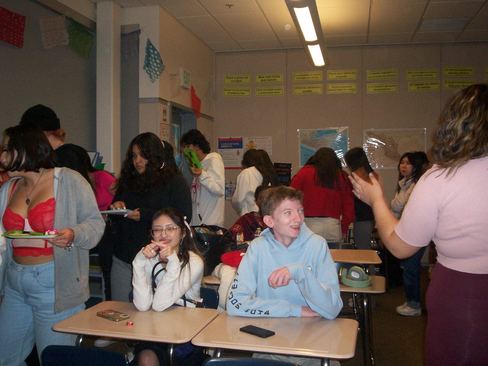

Gianna Cristerna
I starterd working at age 16 at my local pizza shop and ice cream store. I learn quickly how much of a difference good customer service made in service work. I was jugging between my two AP classes and my long shifts after school. I had to leave my job so that I could focus more of my attention to my school work. My AP classes were my first step toward higher education it wasn't until my advisor had reccommended them to me, that I even considered a four year college.
After my junoir year of highschool I started working at the retail store Old Navy during the summer. I went from tossing pizza dough, to getting customers to fill out credit card applications behind the register. I learned what it meant to sell myself and the company, and it wasn't easy; not many people are willing to let a 17 year old convince them to open up a new credit card. I was always complimented for my outstanding customer service and this became a long-term job for me. When school began again. or even after I went off to college I knew I could come back for holidays or breaks.
I am very grateful for the University of California Riverside. Again, I never knew a four-year college was on the table for me; nobody in my family had gone I assumed it was something we didn't do. However, once my highschool advisor had set up a meeting with my mother and I and told us that I could easily attend one, my life change. The transition was hard, but I always believe after hardship or pain came long-term happiness. I decided to major in political science as such topics were the only of interest to me. I am doing very well for myself, I got accepted into the school's honor program and I will start as a honor student in the fall of 2024. I've adjusted very well, and I'm grateful for the school for all it's offered.
Experience
Crew Member
• Greet customers, Take accurate food and drink orders
• Answer phones and process all incoming phone orders, Full-fill all orders
• including delivery orders through Door Dash platform, Serve food and drinks to customers
Sale's Sales Associate
• Greet and engage with the customer at all times, using our product to
connect with the customer
•Perform tasks as requested of you each shift and that pertain to the
successful operation of the business Offer product suggestions and add on additional items when engaging
with customers
Club Secretary
• Took meeting minutes for club general meetings and officer meetings
• Established realtionships with members and took attendence
• Ran outreach programs and contacted any other organizations or staff in a professional manner.
• organized events for over 50 members
Education
UC Riverside
Portfolio
